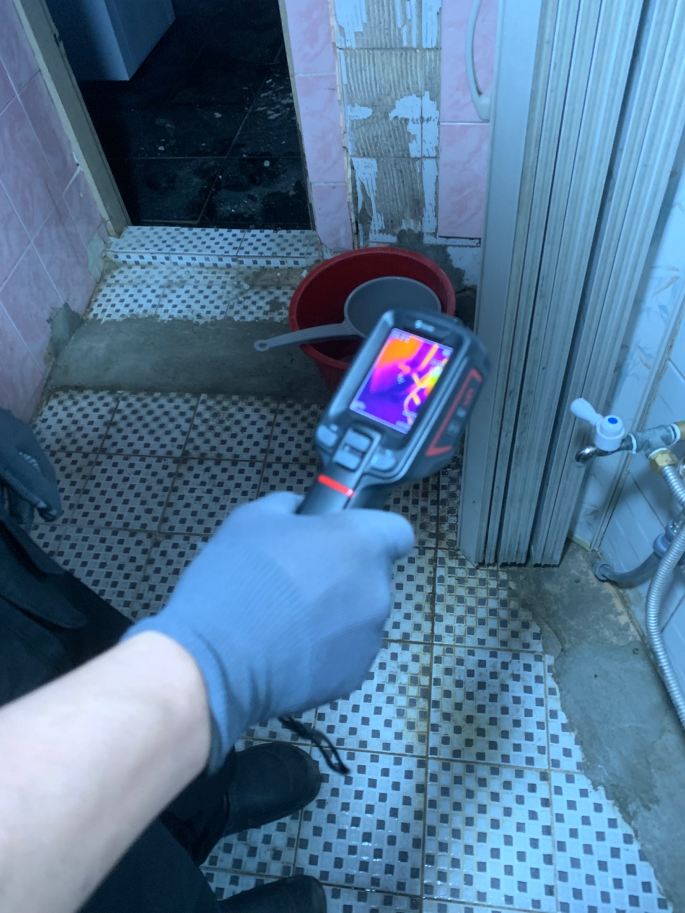
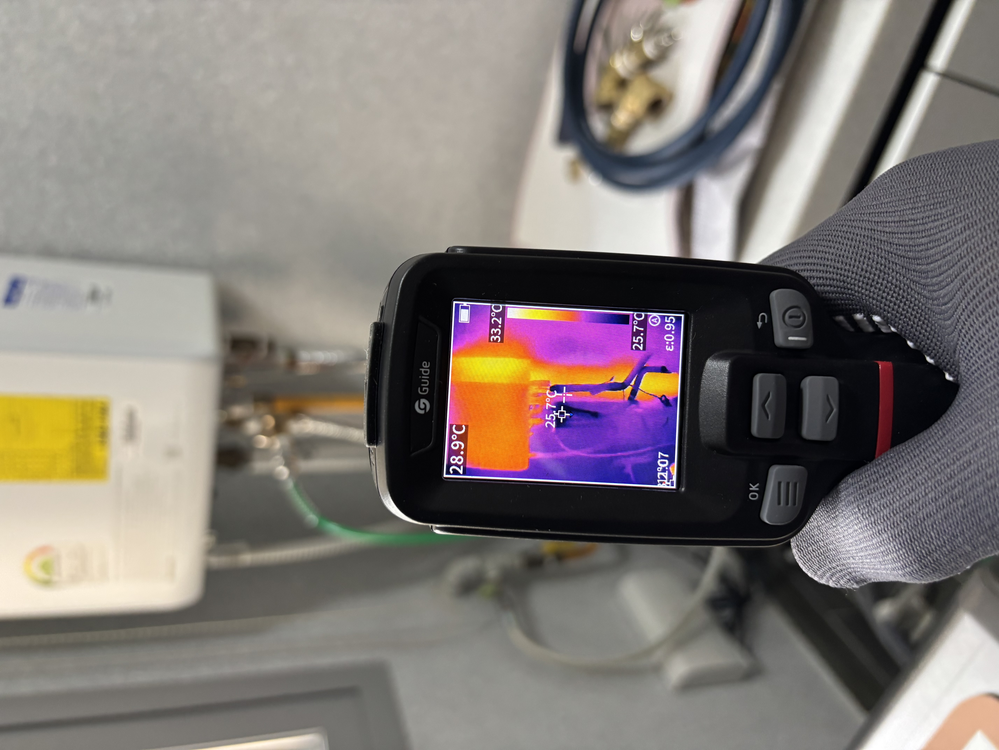
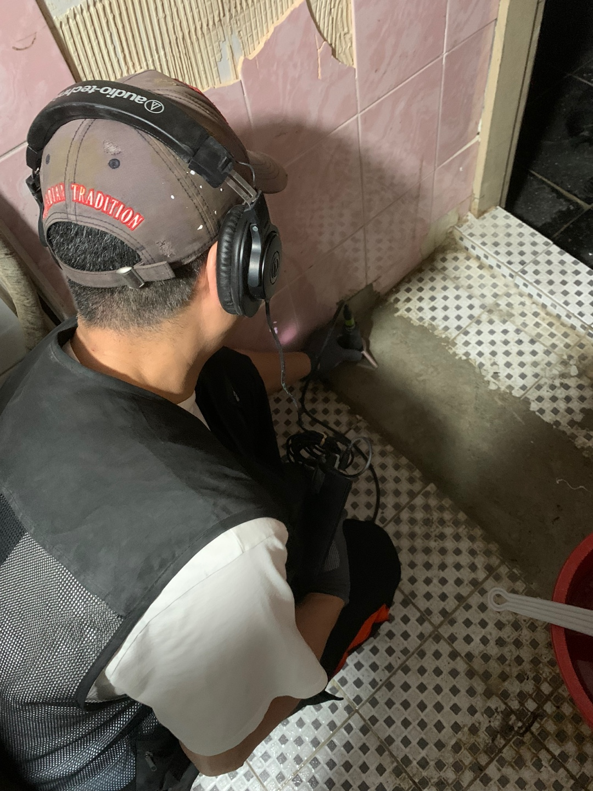
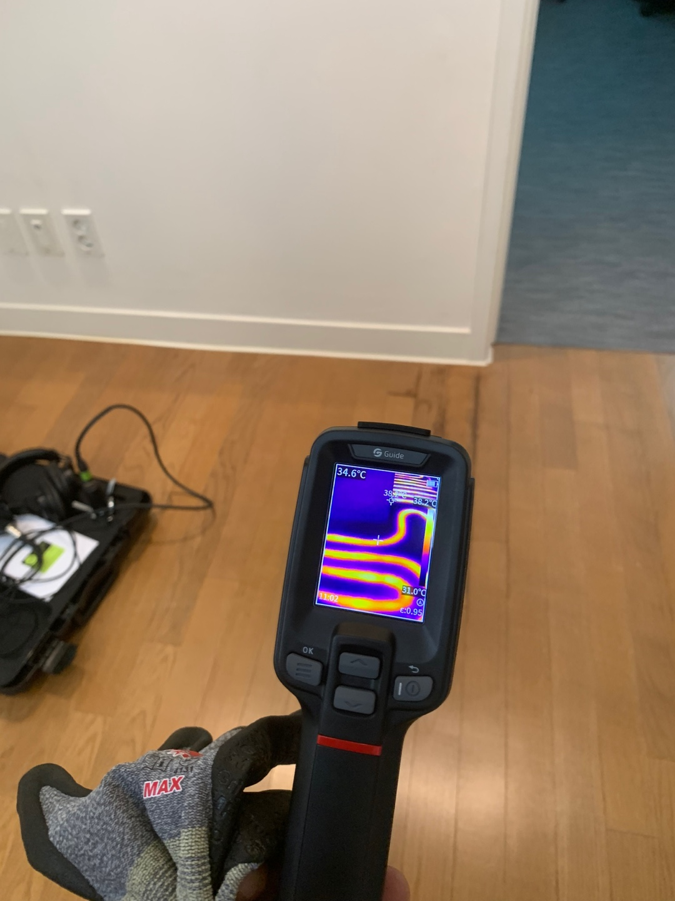
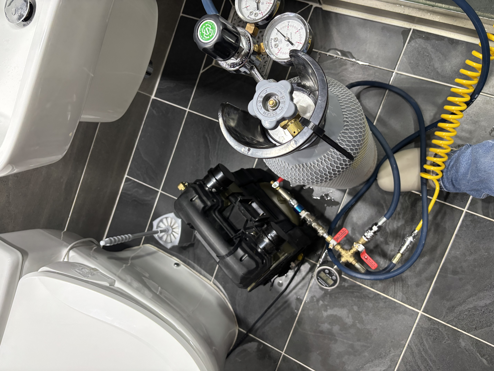
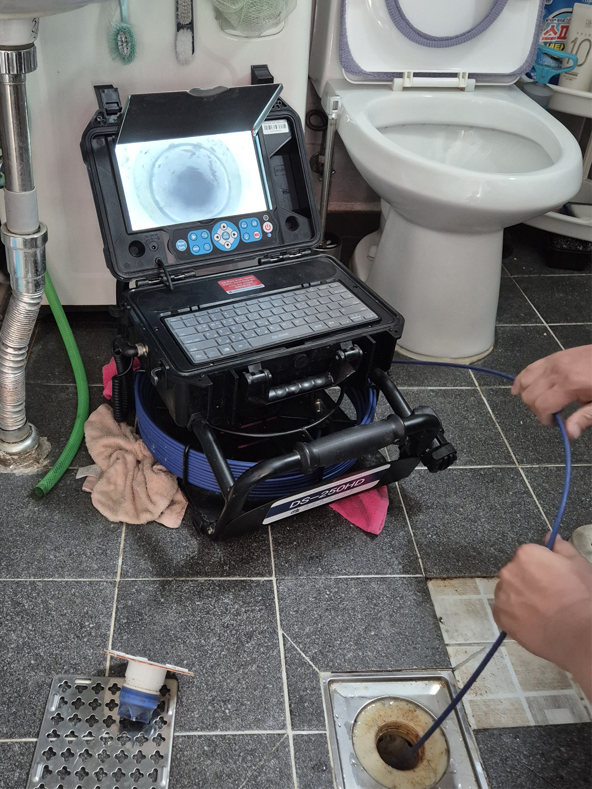
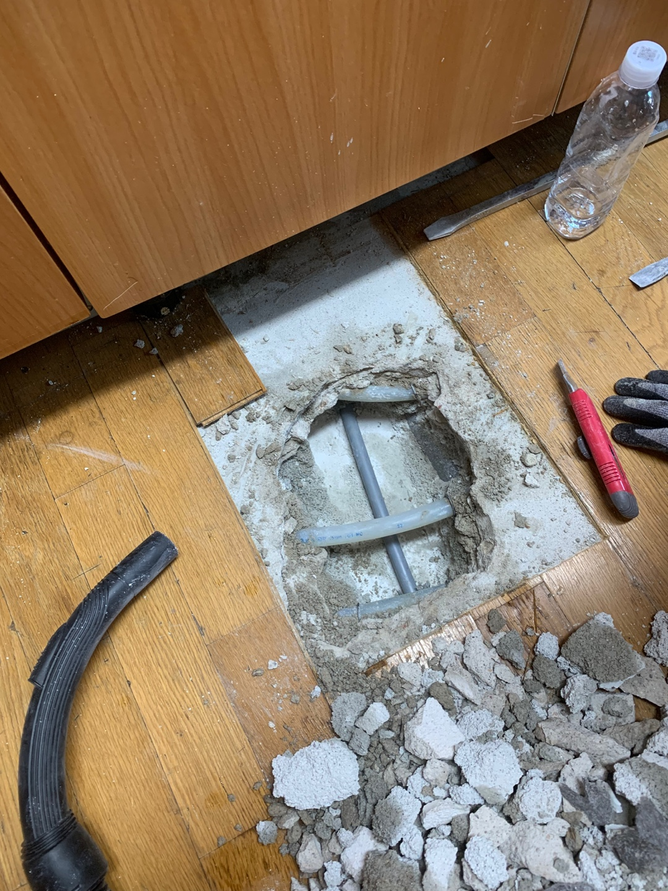
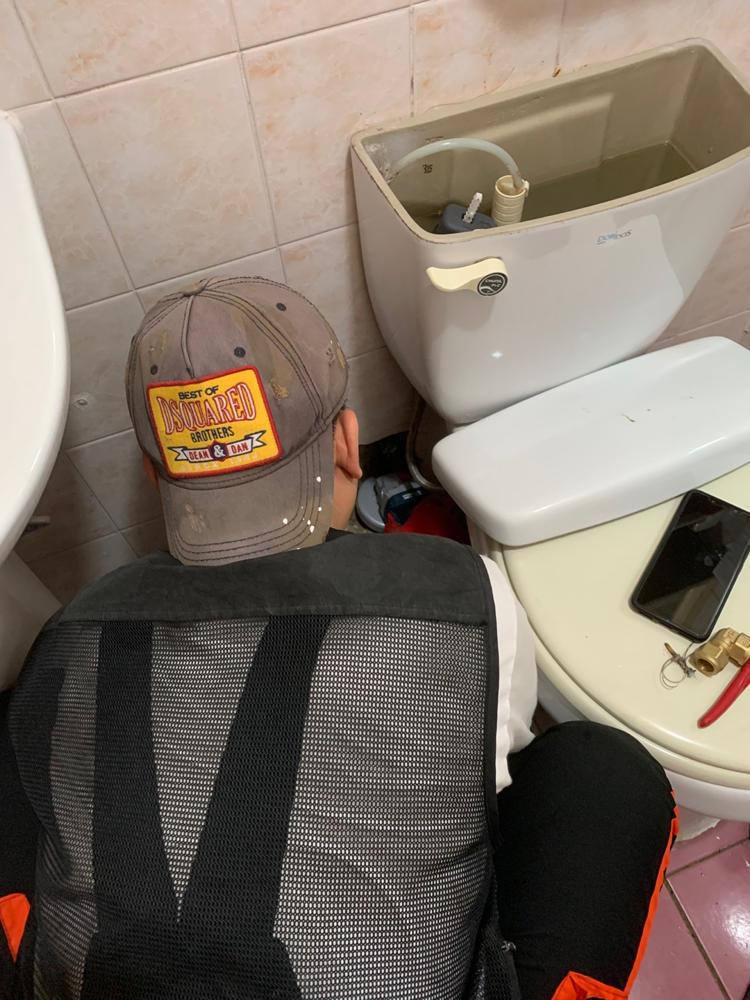

시공 현장
열화상 카메라 · 청음 탐지기 · 내시경 카메라 · 가스 탐지기 · 공압 검사 장비 보유









24시간 연중무휴 · 서울 전지역 · 경기 일부
누수탐지부터 설비 전반까지 전문적으로 해결합니다
수도·천장·배관 누수를 최신 장비로 정밀 탐지합니다
하수구·변기·싱크대·욕실 배수 문제를 빠르게 처리합니다
수도배관 교체·스케일링·동파해빙 등 배관 전반을 담당합니다
수전·세면대·변기·배수트랩 수리 및 교체 작업을 진행합니다
욕실 공사, 베란다·우수관, 공용배관 등 시설 전반을 처리합니다
아파트·빌라·상가·오피스텔·호텔 등 모든 현장에 대응합니다
열화상 카메라 · 청음 탐지기 · 내시경 카메라 · 가스 탐지기 · 공압 검사 장비 보유








주방부터 하수구까지, 집 안 설비 문제를 한 번에 해결합니다
고객이 신뢰하는 6가지 이유
전화 한 통이면 서울 전지역, 경기 일부까지 1시간 이내 현장 도착. 야간·공휴일 관계없이 연중무휴 운영합니다.
다양한 유형의 누수·배관 문제를 해결한 풍부한 현장 경험으로 빠르고 정확하게 원인을 파악합니다.
하청 없이 본사 직영으로 운영합니다. 작업의 처음부터 끝까지 동일한 전문 인력이 책임지고 진행합니다.
정확한 원인 파악을 우선으로 하며, 필요한 작업과 비용을 미리 안내하고 고객 동의 후에만 작업합니다.
아파트, 빌라, 상가, 오피스텔, 호텔 등 주거·상업 공간을 가리지 않고 모든 유형의 현장에 대응합니다.
최신 누수 탐지 장비를 활용하여 벽·바닥을 최소로 훼손하면서 정확한 누수 위치를 찾아냅니다.
문의부터 완료까지 투명하게 진행합니다
전화 또는 카카오톡으로 증상을 말씀해 주세요. 24시간 연결됩니다.
1시간 이내 현장 도착, 최신 장비로 정밀하게 원인을 파악합니다.
작업 내용과 비용을 미리 안내드리고, 동의 후에 진행합니다.
전문 기술로 신속하게 처리하고, 완료 후 현장 정리까지 책임집니다.
방문 전 사전 견적 안내 후, 고객 동의 하에 작업을 시작합니다
서울 전지역 · 경기 일부
방문 출장비 무료
정밀 탐지 및 원인 파악
당일 시공 시 점검비 전액 차감
수전 · 앵글밸브 · 수도꼭지
부속 교체 등 단순 시공
현장 상황 · 작업 범위 · 부속 상태에 따라 비용이 달라질 수 있습니다. 점검 후 정확한 견적을 먼저 안내드리며, 고객님 동의 없이 작업을 시작하지 않습니다. 점검 및 원인 파악만 원하시는 경우에도 방문이 가능합니다.
서울 전지역 및 경기 일부 지역에 출동합니다
실제 현장 시공 사례와 누수·배관 관련 유용한 정보를 네이버 블로그에서 확인하세요.
24시간 연중무휴 · 1시간 이내 방문 · 사전 안내 후 진행
QR코드로 카카오톡 바로 채팅하기
운영시간: 24시간 연중무휴 (야간·공휴일 출동 가능)